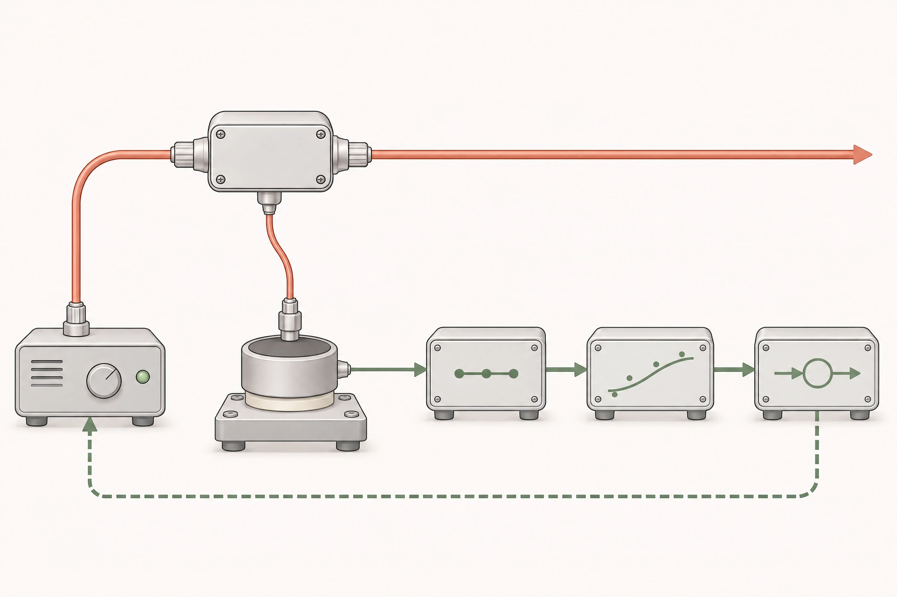

20 W / 40 W Steady-State Residuals
Mostly <1%
In 20 W / 40 W steady-state tests, most model-predicted values remained within 1% of reference power-meter readings.
Medical Laser / Power Monitoring
Redesigned sensing chain and coupler,
eliminating ADC reading fluctuations.

Deliver reliable power sensing, calibration, and closed-loop feedback for a thulium surgical laser. The same output coupler connects the delivery fiber while tapping light into a built-in thermopile detector, requiring hardware-level elimination of EMI and opto-thermal ADC fluctuations plus an accurate calibration model.
Led thermopile application analysis, signal-chain redesign, coupler and thermal-isolation improvements, prototype verification, and empirical power modeling.
Verification accounted for chassis thermal behavior and reference power-meter response.
240 s window
Range 0.40%–1.03%
Line connects lower and upper bounds; marker highlights the 0.63% median.
Select the lower bound, median, or upper bound to inspect its test condition.
25 calibration points span 17.37–59.50 W and 5 Hz–2.5 kHz against a reference power meter, with a +9.5% fitted sensitivity shift.
Verified the redesigned coupler and thermally isolated mounting, eliminating ADC reading fluctuations and closing the thulium laser power loop.
| Metric | Value | Test Condition |
|---|---|---|
| Steady-state fluctuation median | 0.63% | 5 Hz / 4 J; 240 s steady-state window |
| Steady-state fluctuation range | 0.40%–1.03% | 5 Hz / 4 J; 240 s steady-state window |
| Calibration points | 25 pts | Power-model calibration against reference power meter |
| Calibration power range | 17.37–59.50 W | Tested power operating points |
| Calibration frequency range | 5 Hz–2.5 kHz | Tested pulse-frequency operating points |
| Fitted sensitivity change | +9.5% | Model sensitivity change after calibration |
Evaluated detector response characteristics, migrated long analog lines to proximate digital transmission with ferrite-based EMI suppression, and developed physics-informed compensation models.
Conducted hardware/software swaps and thermal operating-condition comparisons against a reference power meter to separate acquisition, detector, mounting, and chassis-heating effects.
Redesigned the thulium laser output coupler, repositioned optical sampling and detector mounting with thermal isolation, and validated prototypes to establish a stable baseline for closed-loop power control.
Separately validated the thermopile empirical modeling methodology in a defined earlier configuration, evaluating 20 W / 40 W steady-state benchmarks and quasi-continuous-wave (QCW) steady-state fit while identifying cold-start drift boundaries.
Mostly <1%
In 20 W / 40 W steady-state tests, most model-predicted values remained within 1% of reference power-meter readings.
R² ≈ 0.995
Coefficient of determination for a defined QCW steady-state configuration (cold-start limitations explicitly identified).